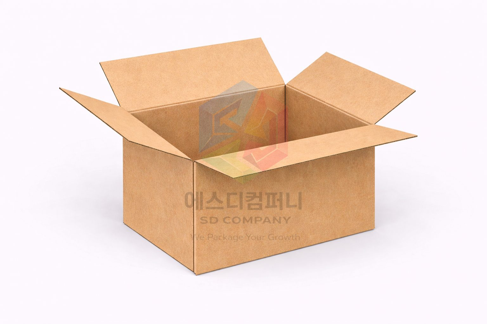
CORRUGATED BOX GUIDE
골판지박스
출고 효율, 강도, 보관성, 인쇄 표현을 함께 고려해 골판지 구조를 정리했습니다. 실제 제작 상담에서 자주 묻는 재질과 골두께 정보도 아래에 함께 배치했습니다.
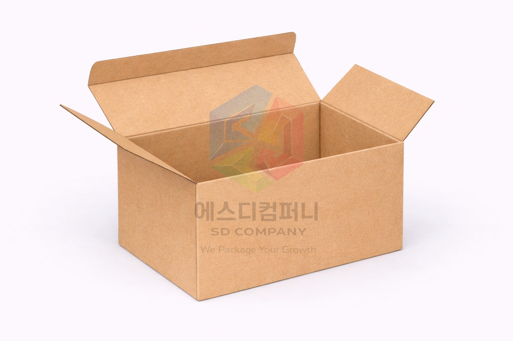
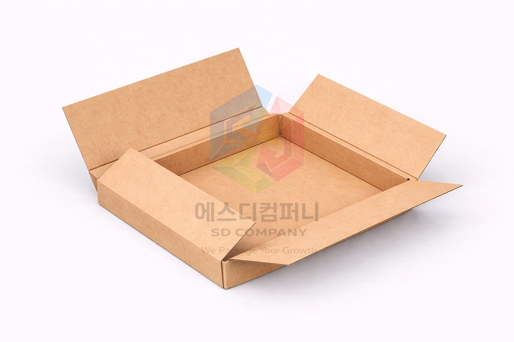
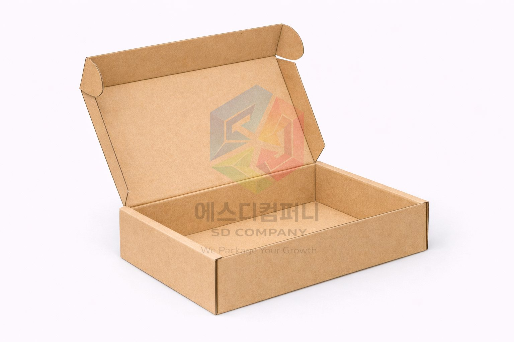
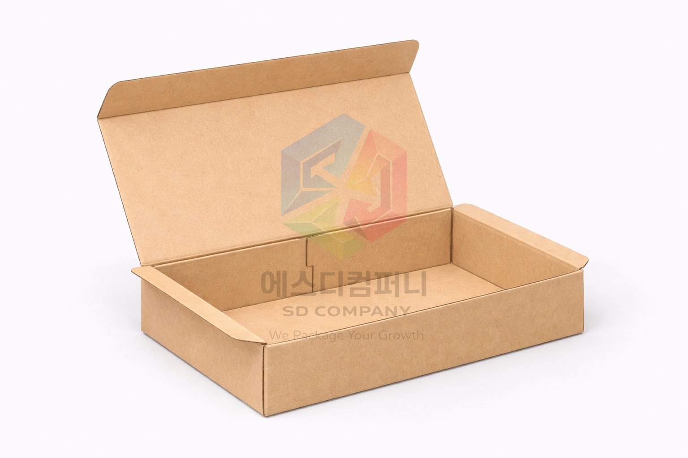

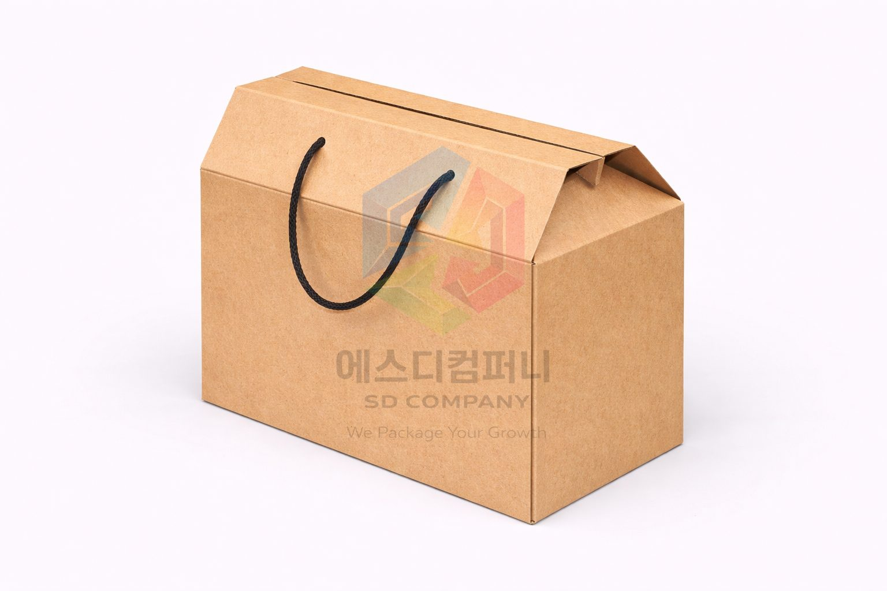
골판지 재질
표면지 톤에 따라 첫인상이 달라집니다.
골판지는 구조만 보는 재료가 아니라, 겉면이 어떤 질감과 색을 갖는지에 따라 제품 인상도 크게 달라집니다. 내추럴한 느낌을 원하면 크라프트 계열, 인쇄 선명도를 높이고 싶다면 화이트 계열을 검토하는 방식으로 접근하면 이해가 쉽습니다.
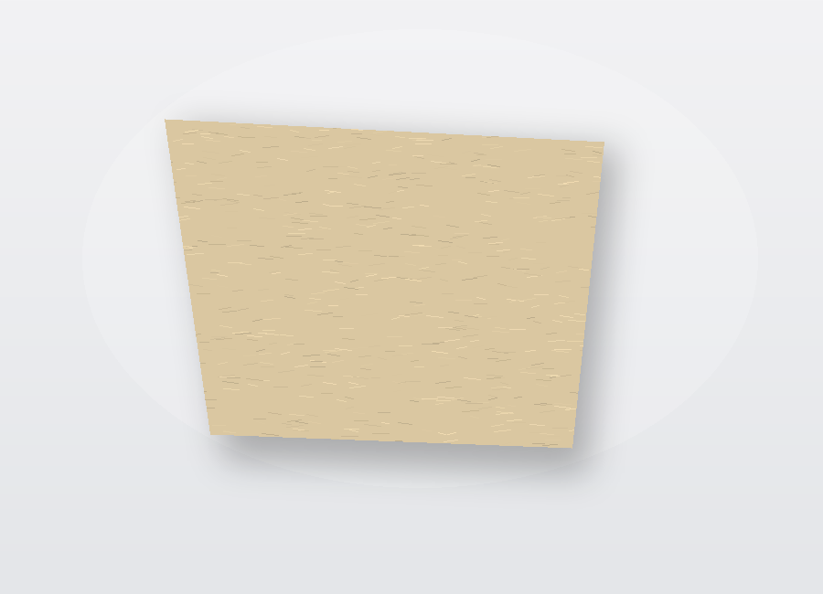
연한 크라프트 표면지
기본 톤이 밝아 로고와 인쇄가 편안하게 보입니다. 자연스럽고 친환경적인 분위기를 주고 싶을 때 많이 고릅니다.
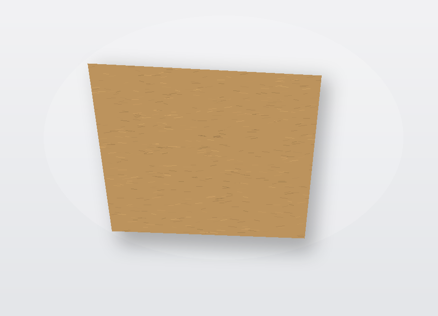
진한 크라프트 표면지
조금 더 묵직하고 존재감 있는 톤입니다. 블랙 계열 인쇄나 단정한 브랜딩과 궁합이 좋습니다.
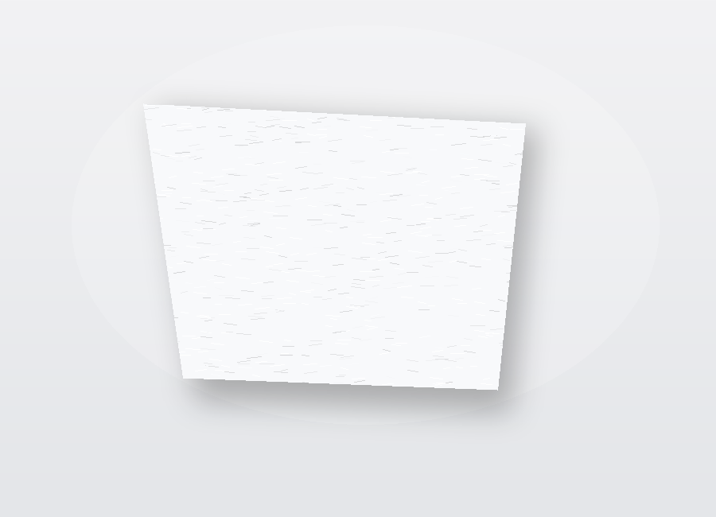
화이트 표면지
컬러 인쇄 표현이 선명하고 깔끔하게 나옵니다. 브랜드 컬러를 적극적으로 쓰고 싶을 때 유리합니다.
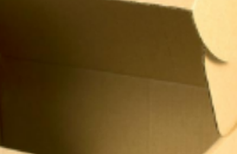
이면지
겉면만큼 주목받지는 않지만, 전체 강도와 내부 마감 인상을 결정하는 기본 지류입니다.
골판지 두께 정보
제품 무게와 보호력에 맞춰 골을 고릅니다.
골 두께는 단순히 두껍고 얇음의 차이가 아니라, 완충력과 적재 안정성의 차이입니다. 가벼운 패키지냐, 무게가 있는 배송형이냐에 따라 선택 방향이 달라집니다.

A골
완충력이 좋아 비교적 부피감 있는 제품이나 배송 중 충격을 줄이고 싶은 포장에 적합합니다.
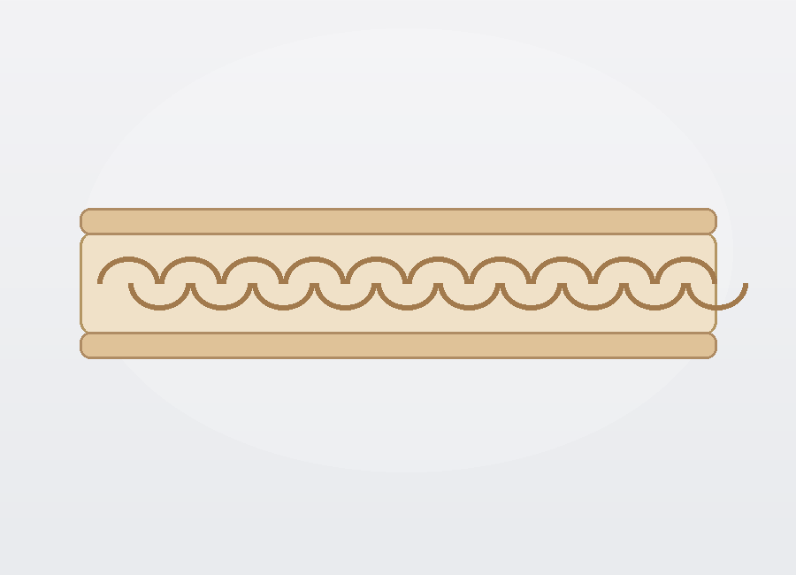
B골
강도와 작업성의 균형이 좋아 가장 실무적으로 많이 검토되는 타입입니다.

E골
얇고 정돈된 느낌이라 인쇄 표현을 중요하게 보는 브랜드 박스에 잘 맞습니다.

BA골
이중골 구조로 보호력과 강도를 동시에 챙기고 싶을 때 선택합니다.
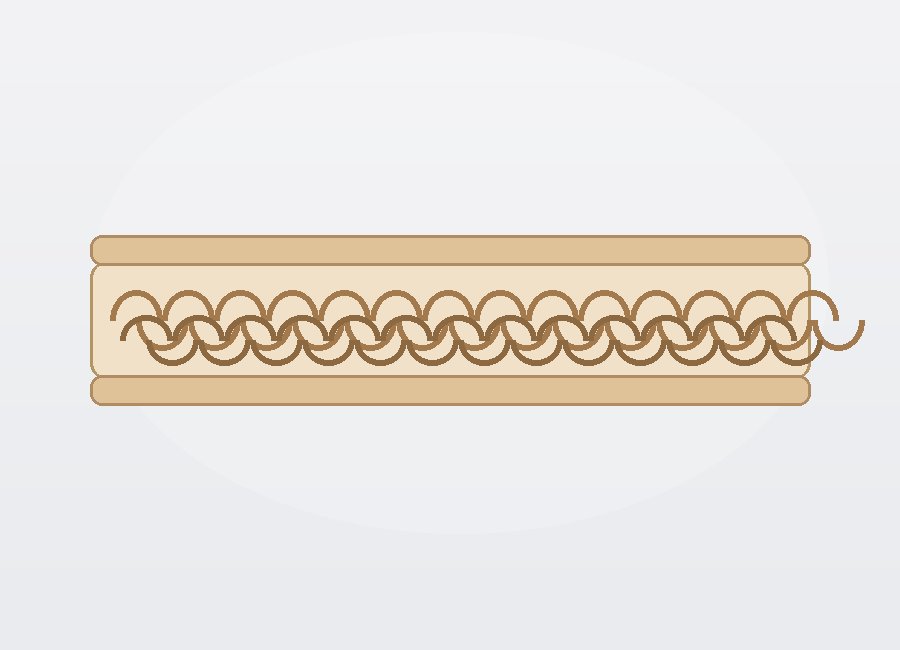
BB골
중량 제품이나 적재가 많은 출고 환경에서 안정적으로 쓰기 좋은 타입입니다.